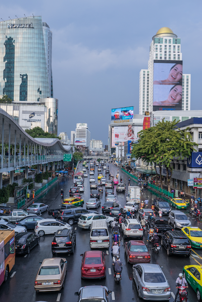
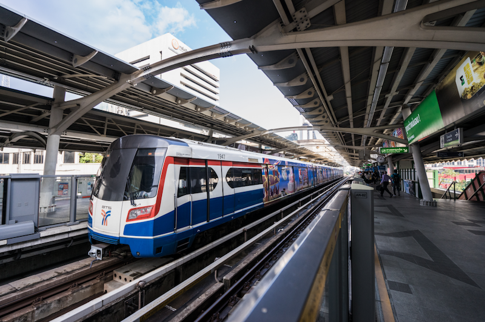
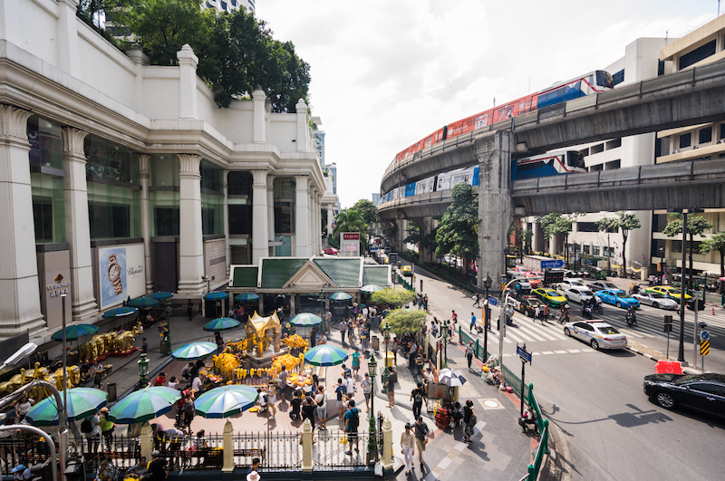
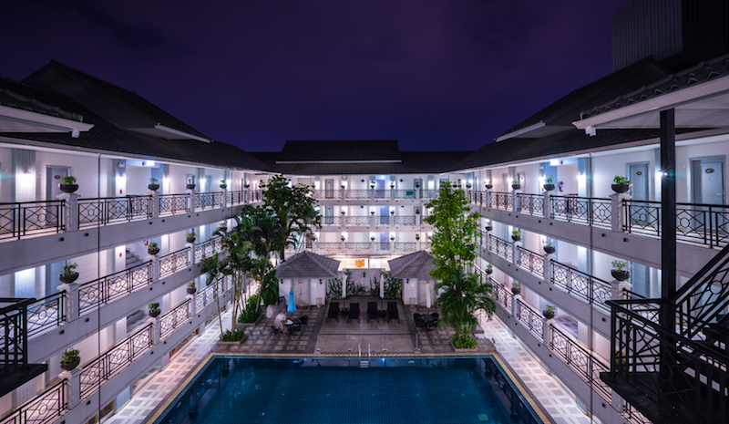
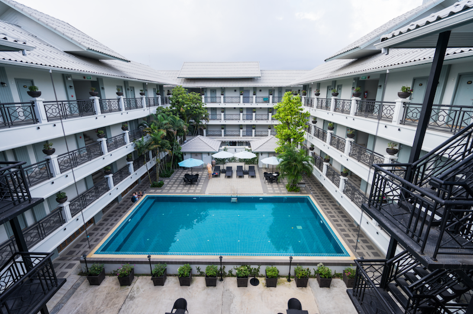
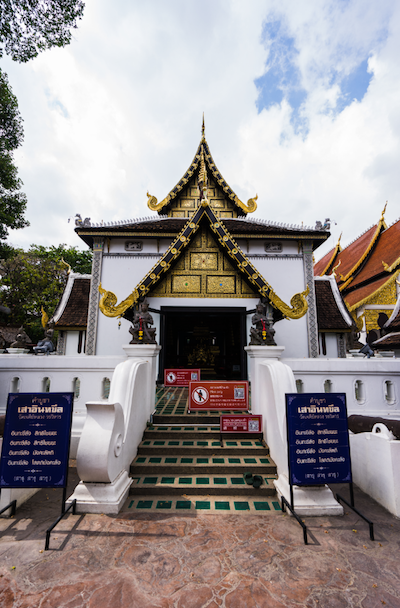
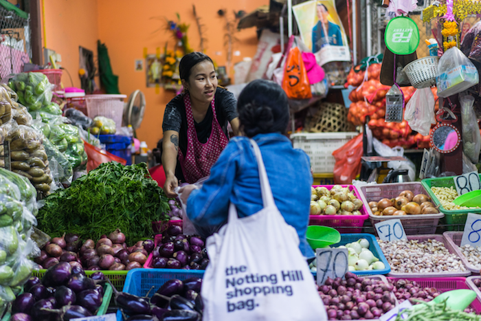
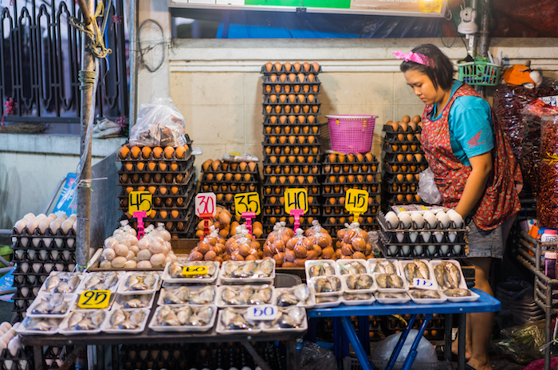
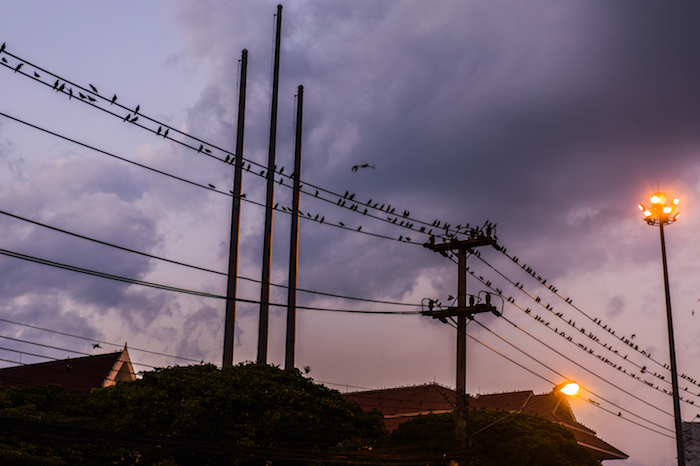

理想照进现实 —— Thailand（下）
迟迟无法动笔写下曼谷和清迈的见闻，是因为对曼谷和清迈真的印象一般，似乎总结下来也就几句话，真的凑不成文，自然而言的要写出一篇虎头蛇尾的游记来。
先说曼谷，似乎还没来到曼谷我就已经在各大驴友网上吸收了一波游记炸弹，给我留下根深蒂固的刻板印象——来曼谷就是来购物的，没有其他。由于我们俩都是那种进了商场就晕的穷光蛋，所以在曼谷就安排了1天的行程，主要是打算去见识下世界最大购物中心的风采，顺便看看有什么要买的。从芭提雅到曼谷是飞猪上叫的拼车服务，同行的是两男两女，其中女生是香港人。高速走了不到两小时，进了曼谷市区却堵了一个多小时，真是名副其实的堵城。

人的心理真是神奇的东西。我想可能是因为我还未出发就把曼谷的优先级放低了，后来发现自己订的酒店也是三个城市下来最差的一个，行程也是最烂的一部分。酒店位置不错，从酒店二楼可直接进入地铁站。泰国的地铁价格不低，乘坐舒适度和国内的相差不多，不买交通卡的话基本上2站路就要5块钱人民币。然而我们发现除了地铁我们根本没有更便捷经济的出行方式。三轮嘟嘟车到处宰客，从水门市场到皇权免税店也就2公里左右的路程，要加100株，事实上也是因为近年来游客多了当地人就开始宰客了。要提醒游客的是，如果你要从清迈等城市离境，曼谷的皇权免税店并不能购买商品并为你寄送到机场。如果你来泰国是为了买买买，真的建议你从曼谷离境，因为清迈的免税店相对规模小且价格高。

泰国的BTS也不是严格意义上的地铁，算轻轨吧，开在高架上。出站后直接无缝连接到各大商场，简直置身在买买买的大世界中，根本不用为小雨没打伞发愁。下图是从地铁出站口往两侧看到的商场一角。

好吧，我发现曼谷的照片已经over了。就文字描述下吧。在曼谷的一天，主要时间都花在商场和比价上了。我本不是个对买买买很有天赋的人，但据说这里的内衣和牛仔服简直是白菜价，无论是身边的同事还是参考的游记，甚至有详细的购买攻略。然而，当我撸起袖子准备大干一场的时候，却发现并不是这样，而此时就算是知道并不划算不买一些回去真觉得对不起自己这一趟了。我深刻怀疑这些买买买攻略都是卖家的水军。实地考察发现，至少是1月份这个时节，曼谷各大商场各大内衣品牌和牛仔品牌并么有大的折扣，和网购比起来可能价格都没有优势。但是，有句老话叫做：来都来了！ 所以我还是焦头烂额的拼命完成了这次曼谷之行的使命，然后顺利坐上了去往清迈的鸟航。
都说清迈是个休闲旅游的好地方，游记也都是各种推荐，然而自己真的去过才觉得也就那样吧。说说总体印象吧。首先，清迈气候适宜，在泰国的凉季偏凉，雨天穿短袖还会让人禁不住哆嗦。我想也许夏天来刚刚好吧。清迈是个小城，中心是古城，四面都有古城墙遗迹，出了古城区就是现代城市了。吃喝玩乐都在四面古城墙的周围，比如宁曼路、周末夜市和各种佛教寺庙。其次，清迈遍地是寺庙，50万人口的小城居然有大大小小的300多座寺庙，这些寺庙根据建造年代和宗教流派的不同而有着各种各样的建筑风格和特色，其中最大数帕辛寺和契迪龙寺。如果你是个虔诚的朝圣者，那么清迈真的是你该来的地方。另外，清迈属于泰北，说起泰餐其实和曼谷差别很大，我无法说的头头是道但个人还是偏爱南部的味道一些，以至于到后来我们非常想找一家中餐厅坐下来。
对清迈的好印象出自某人订的酒店，是我喜欢的风格，白天有泳池休闲时光，夜晚有晚风穿过长廊，开放式的格局让人心情大好，从曼谷的腐朽气息中解脱出来。酒店的早餐很棒，但次于芭提雅那家。


到了清迈发现，这个小城真的没什么好玩的，能玩的地方都在古城内，如果你不是户外运动的爱好者，也不喜欢发呆的话就只能去古城街道上吸尾气或者被某宝上各种一日游牵着鼻子走了。清迈似乎是个适合户外运动的地方，除了有很多老外来玩，各种商家也是批量定制了很多户外一日游项目。如果要去的话，一大早从古城拼车或包车前往百余公里外的场地，在那边排队游玩看人海2小时，然后再舟车劳顿往回跑，一天就过去了。想想真不是我想要的样子。因为我的三天主要是花在了古城游。第一日睡到自然醒后坐嘟嘟车加步行逛了古城的部分道路，发现光靠双腿根本不行。其中，主要是参观了契迪龙寺和其他一些不知名的寺庙，清迈的寺庙真的很多，可见佛教意义在泰国人心目中的地位。契迪龙寺算是仅次于帕辛寺的寺庙，也是建设得最华丽的一座，对外开放但收取门票，寺内有一颗巨大的不知道品种的树给我的印象较深。进入寺庙不允许穿着过于暴露，入寺前可以租借特定的服装。
除了契迪龙寺，还有很多寺庙，回来后甚至都记不清分别是哪一座了。以下照片出自各大不知名寺庙，有的游客不多，安安静静，僧侣们做着手头的功课，一派静谧。有的游客络绎不绝，人声嘈杂，我们进去后马上就出来了。还有的里面有部门佛殿不允许女子进入只有男子可以进入，不知出于什么道理。

寺庙都建在沿街的位置，出了庙门就是马路，小师傅们也是自由出入寺庙，仿佛寺庙就跟学校一般。还别说，契迪龙寺隔壁就是一个小学，有部分小僧侣出入于学校和寺庙之间。
在经过一天双腿的苦旅后，我们选择了租借自行车逛古城。租车很方便，价格也不高，但是在泰国似乎自行车是很不实际的一种交通工具，原因有二：道路未设置自行车道，需要和摩托车汽车抢车道很危险；其次是马路上四处横飞的摩托车时刻排放着熏天的尾气让人一刻都不想逗留。所以第二日虽然不再苦了双腿却把尾气吸了个饱，并且遗憾的是也未进入清迈大学看看这座清迈最好的高校。去美南河边走一遭，据说邓丽君去世时所在的美萍酒店就在附近。去清迈当地人每天都要去的菜市场晃荡一圈。偶遇一个俄罗斯旅行团，对我手中的竹节饭很是感兴趣，我只是笑笑，不好意思告诉他们这东西并不美味。问一问花市的价格，相对国内没有优势。至于泰餐，在经过两天的冬阴功后实在是吃不下了，开始寻找中餐。找到了一家有土豆丝和臊子面的西北餐馆，感觉已经很幸福了。



到了第三日已经迫不及待想要回国了，提上行李再一次走上清迈的街道，气候很舒爽，还是一样的尾气一样的街道，沿途花20株喝下一整个椰子水吃下一整个小菠萝。在街边的小酒馆喝一杯苏打水来一份冬阴功盖饭，有一对看似情侣的白人老外和亚洲美女在谈论台湾上海，似乎是评价旅行后的感受。该走了，清迈。下一次，我还想去芭提雅！